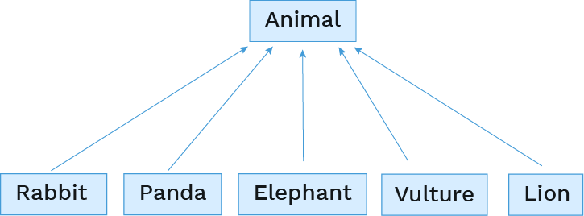

Inheritance
Languages that support object-oriented programming typically include the idea of inheritance to allow for greater code re-use and extensibility, and Python is one of those languages.
To see what we mean by inheritance, let's imagine that we're building a game, "Animal Conserving", that simulates an animal conservatory. We'll be taking care of both fuzzy and ferocious animals in this game, making sure they're well fed and cared for.

We're going to use OOP to organize the data in the game. What do you think the classes should be?
Here's one approach:
# A class for meals
Meal()
# A class for each animal
Panda()
Lion()
Rabbit()
Vulture()
Elephant()Let's start writing out the class definitions, starting simple with the Meal class:
class Meal:
def __init__(self, name, kind, calories):
self.name = name
self.kind = kind
self.calories = caloriesHere's how we would construct a couple meals:
broccoli = Meal("Broccoli Rabe", "veggies", 20)
bone_marrow = Meal("Bone Marrow", "meat", 100)Now, some of the animal classes, starting with our long-trunked friend: 🐘
class Elephant:
species_name = "African Savanna Elephant"
scientific_name = "Loxodonta africana"
calories_needed = 8000
def __init__(self, name, age=0):
self.name = name
self.age = age
self.calories_eaten = 0
self.happiness = 0
def eat(self, meal):
self.calories_eaten += meal.calories
print(f"Om nom nom yummy {meal.name}")
if self.calories_eaten > self.calories_needed:
self.happiness -= 1
print("Ugh so full")
def play(self, num_hours):
self.happiness += (num_hours * 4)
print("WHEEE PLAY TIME!")
def interact_with(self, animal2):
self.happiness += 1
print(f"Yay happy fun time with {animal2.name}")Every elephant shares a few class variables, species_name, scientific_name, and calories_needed. They each have their own name, age, calories_eaten, and happiness instance variables, however.
Let's make a playful pair of elephants:
el1 = Elephant("Willaby", 5)
el2 = Elephant("Wallaby", 3)
el1.play(2)
el1.interact_with(el2)Next, let's write a class for our cute fuzzy long-eared friends: 🐇
class Rabbit:
species_name = "European rabbit"
scientific_name = "Oryctolagus cuniculus"
calories_needed = 200
def __init__(self, name, age=0):
self.name = name
self.age = age
self.calories_eaten = 0
self.happiness = 0
def play(self, num_hours):
self.happiness += (num_hours * 10)
print("WHEEE PLAY TIME!")
def eat(self, food):
self.calories_eaten += food.calories
print(f"Om nom nom yummy {food.name}")
if self.calories_eaten > self.calories_needed:
self.happiness -= 1
print("Ugh so full")
def interact_with(self, animal2):
self.happiness += 4
print(f"Yay happy fun time with {animal2.name}")And construct a few famous rabbits:
rabbit1 = Rabbit("Mister Wabbit", 3)
rabbit2 = Rabbit("Bugs Bunny", 2)
rabbit1.eat(broccoli)
rabbit2.interact_with(rabbit1)Do you notice similarities between the two animal classes? The structure of the two classes have much in common:
Both
ElephantandRabbithave the same three class variable names, though the values of their class variables differ.ElephantandRabbittake the same arguments in their__init__method, and then initialize the same four instance variables. Their__init__methods are, in fact, identical.The
eatandplaymethods are identical. Theinteract_withmethods are nearly identical, but vary in how much the happiness instance variable increases.
So it appears that 90% of their code is in fact the same. That violates a popular programming principle, "DRY" (Don't Repeat Yourself), and personally, makes my nose crinkle a little in disgust. Repeated code is generally a bad thing because we need to remember to update that code in multiple places, and we're liable to forget to keep code in sync that's meant to be the same.
Fortunately, we can use inheritance to rewrite this code. Instead of repeating the code, Elephant and Rabbit can inherit the code from a base class.
Base class
When multiple classes share similar attributes, you can reduce redundant code by defining a base class and then subclasses can inherit from the base class.
For example, we can first write an Animal base class, put all the common code in there, and the specific animal species can be subclasses of that base class:

You'll also hear the base class referred to as the superclass.
Here's how we could write the Animal base class:
class Animal:
species_name = "Animal"
scientific_name = "Animalia"
play_multiplier = 2
interact_increment = 1
def __init__(self, name, age=0):
self.name = name
self.age = age
self.calories_eaten = 0
self.happiness = 0
def play(self, num_hours):
self.happiness += (num_hours * self.play_multiplier)
print("WHEEE PLAY TIME!")
def eat(self, food):
self.calories_eaten += food.calories
print(f"Om nom nom yummy {food.name}")
if self.calories_eaten > self.calories_needed:
self.happiness -= 1
print("Ugh so full")
def interact_with(self, animal2):
self.happiness += self.interact_increment
print(f"Yay happy fun time with {animal2.name}")We even defined class variables in there. We didn't need to do that, since the values of those variables don't make sense, but it is helpful to show the recommended class variables for the subclasses.
Subclasses
To declare a subclass, put parentheses after the class name and specify the base class in the parentheses:
class Elephant(Animal):Then the subclasses only need the code that's unique to them. They can redefine any aspect: class variables, method definitions, or constructor. A redefinition is called overriding.
Here's the full Elephant subclass, which only overrides the class variables:
class Elephant(Animal):
species_name = "African Savanna Elephant"
scientific_name = "Loxodonta africana"
calories_needed = 8000
play_multiplier = 4
interact_increment = 1
num_tusks = 2Same for the Rabbit class:
class Rabbit(Animal):
species_name = "European rabbit"
scientific_name = "Oryctolagus cuniculus"
calories_needed = 200
play_multiplier = 10
interact_increment = 2
num_in_litter = 12Overriding methods
A subclass can also override the methods of the base class. Python will always look for the method definition on the current object's class first, and will only look in the base class if it can't find it there.
We could override interact_with for pandas, since they're quite solitary creatures:
class Panda(Animal):
species_name = "Giant Panda"
scientific_name = "Ailuropoda melanoleuca"
calories_needed = 6000
def interact_with(self, other):
print(f"I'm a Panda, I'm solitary, go away {other.name}!")This code will call that overridden method definition instead of the Animal definition:
panda1 = Panda("Pandeybear", 6)
panda2 = Panda("Spot", 3)
panda1.interact_with(panda2)The following code would not, however. Do you see why?
pandey = Panda("Pandeybear", 6)
bugs = Rabbit("Bugs Bunny", 2)
bugs.interact_with(pandey)The object on the left-hand side of the dot notation is of type Rabbit and there is no interact_with defined on Rabbit, so the original Animal method definition will be used instead.